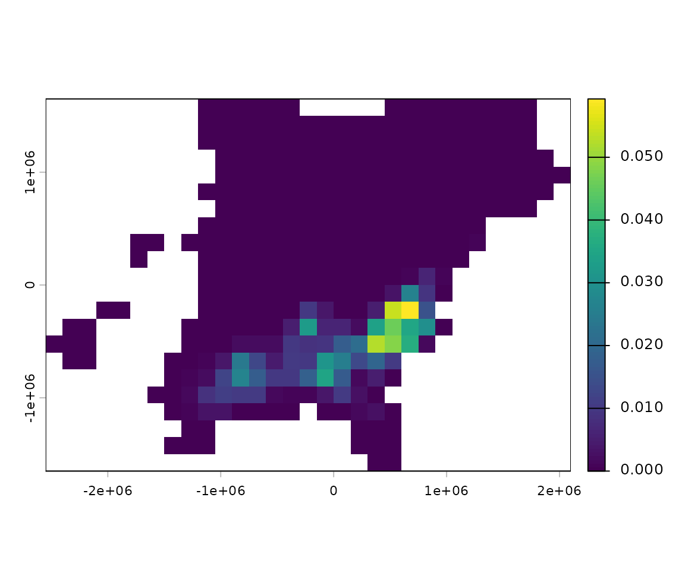

Standard install
This uses R and RStudio installed directly on your system if you have both of those installed skip to step 3.
Install R from CRAN - follow links for your system in the upper right. I’m currently using R version 4.3.1 (2023-06-16) but I think any 4.2.x and above should work.
Install RStudio IDE This isn’t strictly necessary, but RStudio is a significant upgrade to R’s standard GUI.
-
Install required R packages. Open RStudio and run the following in the console.
installed <- rownames(installed.packages()) if(!"remotes" %in% installed) install.packages("remotes") if(!"rnaturalearthdata" %in% installed) install.packages("rnaturalearthdata") remotes::install_github("birdflow-science/BirdFlowModels") remotes::install_github("birdflow-science/BirdFlowR", build_vignettes = TRUE)Package dependencies can be a pain. If the above doesn’t work you can also try the alternative method below, also executed in the RStudio console.
installed <- rownames(installed.packages()) if(!"pak" %in% installed) install.packages("pak") pak::pkg_install("rnaturalearthdata", ask = FALSE) pak::pkg_install("birdflow-science/BirdFlowModels", ask = FALSE, ) pak::pkg_install("birdflow-science/BirdFlowR", ask = FALSE, dependencies = TRUE)If neither of those methods work a last option to try with specific troublesome packages is to use RStudio’s “Install Packages” from the top of the “Tools” menu.
Docker
Alternatively you can install from a Dockerfile
Here’s how one can use the Dockerfile in Linux/MacOS (Windows should be similar).
Download and install Docker Desktop.
If your computer has an Apple Silicon chip (e.g., M1 or M2), in Docker Desktop go to Settings > General and ensure “Use Virtualization Framework” is checked, then go to Features in Development > and check “Use Rosetta for x86/amd64 emulation on Apple Silcon”. Apply these settings and restart Docker Desktop as needed.
Ensure that Docker Desktop is running.
Clone the BirdFlowR package from GitHub.
-
Go to the top level BirdFlowR directory, build the image from the Dockerfile, and tag the image as ‘birdflow’. It will take a long time the first time because it will need to download the rocker/geospatial:
image from Docker Hub, which is the starting point before we install our custom packages via the Dockerfile. For future builds on the same machine, rocker/geospatial will already be cached by Docker, so all it needs to do to is re-install our custom packages. The build step really only needs to happen when you want to use a newer version of the BirdFlowR repo. See also: https://rocker-project.org/images/versioned/rstudio.html cd ~/BirdFlowR docker build -t birdflow . --no-cache -
Launch a Docker container from the image, and launch an RStudio Server instance from the container. If you’re doing it locally on your computer, you can use this version to skip the password. Specifying the IP address in this way should make it only accessible from the same computer, according to the Rocker page.
docker run --platform linux/amd64 --rm -ti -e DISABLE_AUTH=true -p 127.0.0.1:8787:8787 birdflowIf you’re doing it between computers, make sure to only include the ports, and require authentication:
docker run --platform linux/amd64 --rm -ti -e PASSWORD=yourpassword -p 8787:8787 birdflow Once you see the message saying services are started, point your web browser to localhost:8787/ to use RStudio from the image.
When you’re done, go back to the terminal window that started the docker services, and hit Control-C. This will send a kill signal to the container that is supporting the RStudio server process.
The Rocker webpage shows some ways to persist directories and settings between the container and host as well, so that you don’t lose your Rstudio settings and local work each time you launch/close a container.
ebirdst
If you want to preprocess species for model fitting you will need an ebirdst access code that you must request via an online form.
Once you have the code you should run (in the R or RStudio console):
library(ebirdst)
set_ebirdst_access_key("XXXXX")where “XXXXX” is the access key.
Then restart R.
Test
Run these lines to see see if you’ve installed the two BirdFlow packages and their dependencies.
library(BirdFlowModels)
library(BirdFlowR)
library(terra)
bf <- BirdFlowModels::amewoo
print(bf)
plot(rast(bf, 1))
#> American Woodcock BirdFlow model
#> dimensions : 45, 51, 52 (nrow, ncol, ntimesteps)
#> resolution : 79995.7798343748, 79995.8424586389 (x, y)
#> active cells : 1706
#> size : 19 Mb